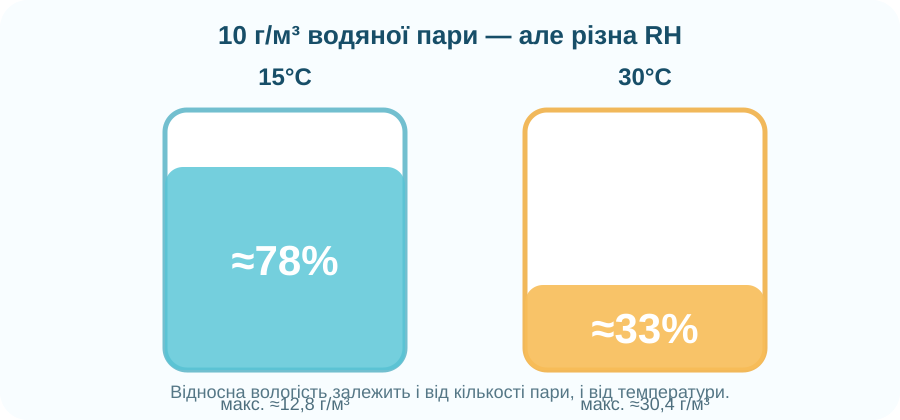
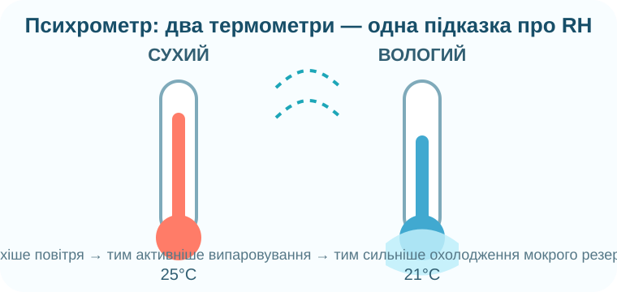

Звідки в повітрі вода, якщо ми її не бачимо?

🔎 Передбачення
Водяна пара — невидимий газ. Звідки вона надходить у повітря?
Що прискорює випаровування?
Змінюйте умови. Індекс випаровування — модель, а не реальний прогноз у мм/год: вона показує напрям впливу чинників.
Абсолютна ≠ відносна
Калькулятор відносної вологості
φ = фактична кількість водяної пари / максимально можлива за цієї температури × 100%
Одна вода — різна відносна вологість

У двох пробах по 10 г/м³ водяної пари. За 15°C максимально можливо ≈12,8 г/м³, за 30°C ≈30,4 г/м³.
🧠 Пастка «вранці вологіше — отже води стало більше»
У кімнаті вночі температура впала з 25°C до 15°C, але кількість водяної пари майже не змінилась. Відносна вологість зросла. Чи додалась вода в повітря?
Вологість видно з космосу


🌡️ Як вимірюють?

Вода з мокрого резервуара випаровується й охолоджує «вологий» термометр. Чим сухіше повітря, тим швидше випаровування і тим більша різниця температур.
Молекула води в атмосфері
Дивіться з питанням
Які два переходи агрегатного стану пов’язують поверхню Землі з атмосферою?
NASA Goddard: Earth’s Water Cycle. Зверніть увагу на випаровування, перенесення пари та конденсацію.
Зберемо правила
Перехід рідкої води у водяну пару. Посилюється за вищої температури, руху повітря та більшої відкритої поверхні.
Фактична маса водяної пари в одиниці об’єму повітря; у шкільних задачах часто г/м³.
Відношення фактичної кількості пари до максимально можливої за даної температури, у %.
Повітря насичене водяною парою. Подальше охолодження сприяє конденсації.
Температура, до якої треба охолодити повітря, щоб воно стало насиченим і почалась конденсація.
Прилад для вимірювання вологості. Один із принципів — за точкою роси; психрометр використовує сухий і вологий термометри.
Чому RH може зрости без додавання водяної пари?
§ 29 + один вимір
1. Опрацюйте §29. 2. Відкрийте електронний підручник на ВШО. 3. Якщо вдома є гігрометр — запишіть RH і температуру вранці та ввечері; якщо немає — візьміть два значення з погодного застосунку і поясніть різницю.
Електронний підручник / ВШО →